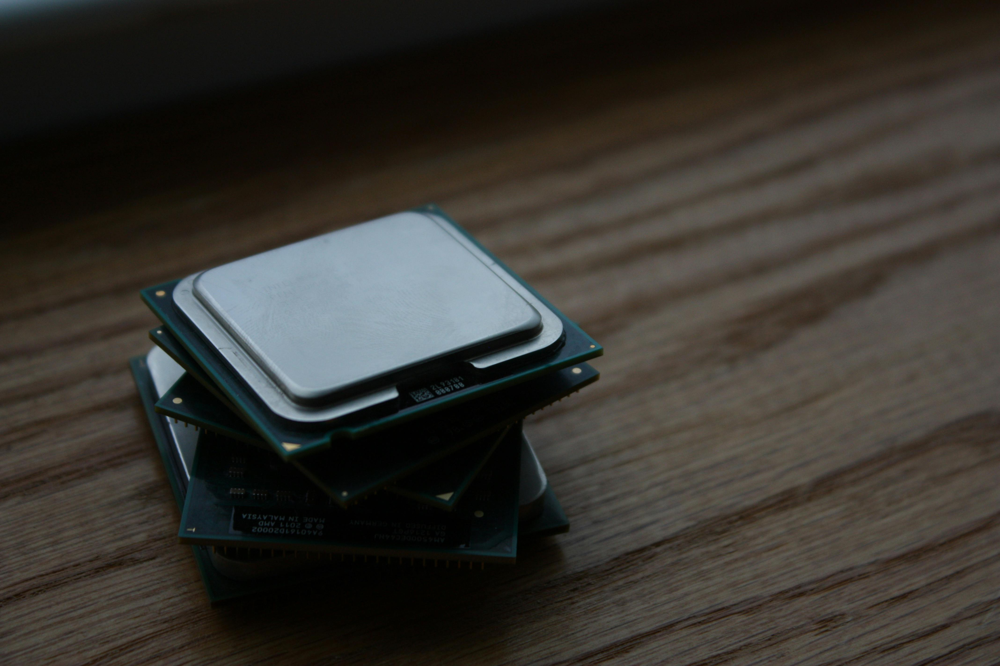

CPU (Processor)
- Role
- Computes binaries to run the OS, apps, game logic.
- Key Specs
- Cores/Threads|Base/Boost clocks|Cache|TDP.
- Examples
- AMD Ryzen 5 5600|Intel Core i5-12400F
- iGPU
- Integrated graphics on some CPUs (Intel UHD|AMD Vega)
- Overclocking
- Unlocked models (AMD X|Intel K) can be overclocked via BIOS or software, requires good cooling
- Thermals
- Keep under sustained limits for best performance
- Socket
- Must match motherboard (AMX, LGAXXXX, etc.)